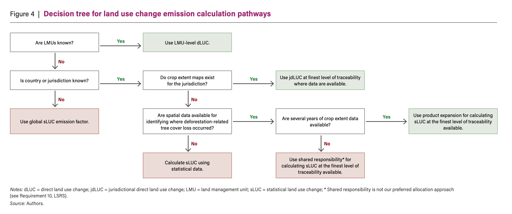

Extract land use change (LUC) emission factors and land-occupation yields from the WRI Global Cropland Scope-3 Carbon (GCSC) database. Search by commodity, country, and sub-region — for statistical sLUC (global/national/subnational) and jurisdictional jdLUC (oil palm, soy, cocoa) datasets — and apply co-product / by-product allocation where available.
How to use this tool — Follow the steps top-to-bottom: 1 pick a commodity, 2 choose a traceability level (municipality → state/province → national, in that order of preference, or global world average), 3 select country and sub-region (auto-set to World at the global level), 4 set reporting year and gas (CO2e only for global averages), 5 apply co-product allocation if shown, then 6 extract.
For oil palm, soy, and cocoa, a jurisdictional direct land-use-change (jdLUC) emission factor is available for specific jurisdictions. It reflects deforestation emissions attributed to the commodity within that specific jurisdiction, which can be more representative than a statistical average when your sourcing area is known. When both are available for the selected geography, a LUC Method selector appears — pick sLUC (statistical) or jdLUC (jurisdictional) as appropriate for your supply chain.
Use this decision tree to determine which land use change emission factor (sLUC, jdLUC, or dLUC) applies to your sourcing scenario.

Decision tree for selecting the appropriate land use change emission factor. Source: Fitts et al. (2025) — Geospatial methods for corporate GHG accounting of deforestation and land occupation (WRI Guidebook).
The GCSC database (Fitts et al., 2025) provides spatially explicit statistical land use change (sLUC) emission factors for 42 agricultural crops across global, national (ADM0), subnational (ADM1), and local (ADM2) scales, with reporting years 2020–2024. sLUC emission factors are expressed in tonnes CO2e per tonne of crop, and quantify GHG emissions from deforestation linked to agricultural expansion over a 20-year assessment period (2001–2020).
Separately, jurisdictional direct land use change (jdLUC) emission factors are provided for oil palm, soy, and cocoa at ADM0/ADM1/ADM2 levels. Where a raw crop has co-products or by-products (oil palm, soy, cocoa), the raw crop emission factor is multiplied by a co-product allocation ratio (e.g., from Appendix C of the companion technical note) to obtain the product-level emission factor.
CO2e is the sum of CO2 + CH4 + N2O. Each gas is expressed in CO2e. Yield factors (tonnes and kg per hectare, plus 1/yield) are included for land-occupation calculations.
| Dataset | Commodities | Admin levels | Fields |
|---|---|---|---|
| sLUC Statistical LUC EFs | 42 crops | Global · ADM0 · ADM1 · ADM2 | LD_{y}, production_{y}, EF_{y} per gas (CO2e, CO2, CH4, N2O) |
| jdLUC Jurisdictional LUC EFs | Oil palm · Soy · Cocoa | ADM0 · ADM1 · ADM2 | area_ha, yield, production, LD_{y}_{gas}, EF_{y}_{gas} |
| Co-products | Oil palm · Soy · Cocoa | ADM0 · ADM1 · ADM2 | co_product, functional_unit, allocation_ratio, co_product_EF_{y} |
| Yield factors | 42 crops | ADM0 · ADM1 | yield_mt, yield_kg, yield_factor_kg (1/yield) |
The dataset was developed by Fitts et al. (2025) and integrates SPAM 2020 v2.0 cropland maps, Global Forest Watch tree cover loss and forest carbon flux data, Global Pasture Watch, and drivers of forest loss to isolate agriculture-driven deforestation. It covers deforestation-driven LUC (forest to cropland) only; other conversions are out of scope. It is intended for crop commodities only.
Emissions are reported in tonnes CO2e per tonne of commodity. Traceability guidance recommends the finest available level (ADM2 over ADM1 over ADM0) and scaling up when a municipality has very low commercial production.